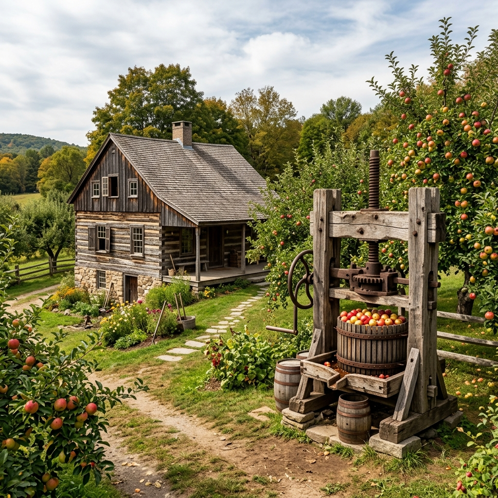

Roots & Tradition
Founded in 1952, our orchard has been a cornerstone of the community for over seven decades.
Founded in 1952, our orchard has been a cornerstone of the community for over seven decades.

It all started with just ten saplings and a simple wooden cart. My grandfather, Silas, believed that the secret to the best cider donut wasn't in the sugar, but in the soil.
Today, we maintain 45 varieties of heirloom apples, many of which are rare grafts preserved specifically for their unique baking properties. Every donut is still mixed in small batches, ensuring that every bite carries the legacy of Silas's vision.
Through changing seasons and evolving baking technologies, we have fiercely guarded Silas's original methods. Our apple cider is pressed using a traditional rack-and-cloth press, extracting the rich, complex flavors that define our signature cider donuts. This combination of heritage agricultural practices and classic baking techniques forms the bedrock of everything we create.
We invite you to walk among our ancient apple rows, breathe in the crisp autumn air, and taste the timeless quality that only four generations of dedicated family farming can deliver.
Years of Baking
Trees Planted
Heirloom Varieties
We use solar-powered irrigation and natural composting to keep our orchard thriving without harsh chemicals.
From our annual harvest festival to local school tours, we believe in giving back to the valley we call home.
No shortcuts, no artificial flavors. Just real fruit, fresh butter, and time-tested family recipes.